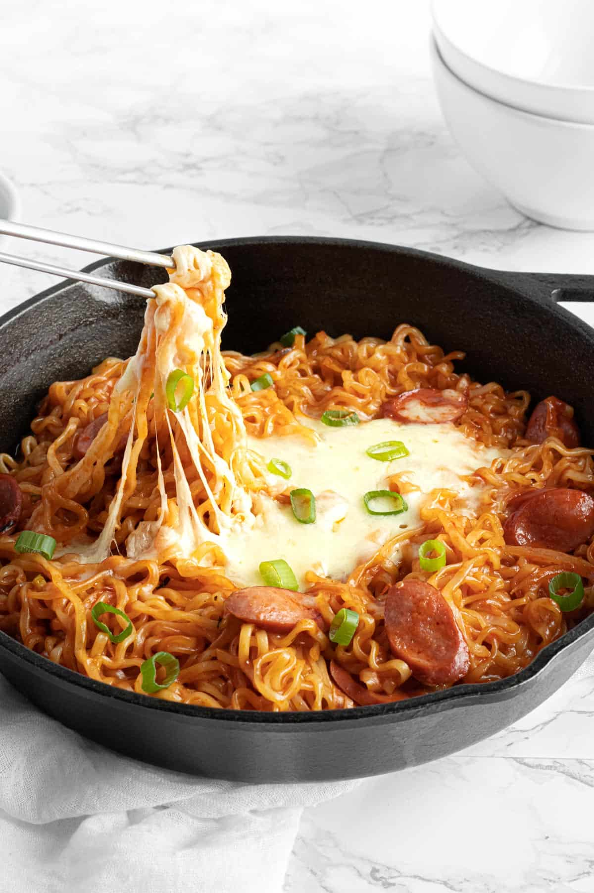

Ramen

Description
Creamy, spicy, cheesy! This recipe combines it all. Grab that cheese buldak ramen pack sitting in your pantry and turn it into the best lunch possible. Wurstel sausage and melted mozzarella cheese go perfectly with these instant noodles. Ready in 10 MINUTES!
Ingredients
- 1 small onion
- 1 green onion
- 1 sausage
- 2 packs cheese buldak ramen
Steps
- Chop onion, green onion and sausage.
- In the meantime, boil some water. Once the water is boiling, cook the ramen for 4 minutes – I like to cook them one minute less than recommended (5 minutes as per package) just because the ramen will keep on cooking once we steam the mozzarella.
- Prepare the sauce. In a pan, add cooking oil and cook the onion on medium-high heat for 1 minute.
- Add the white part of the green onion and the sausage. Cook for 1 more minute.